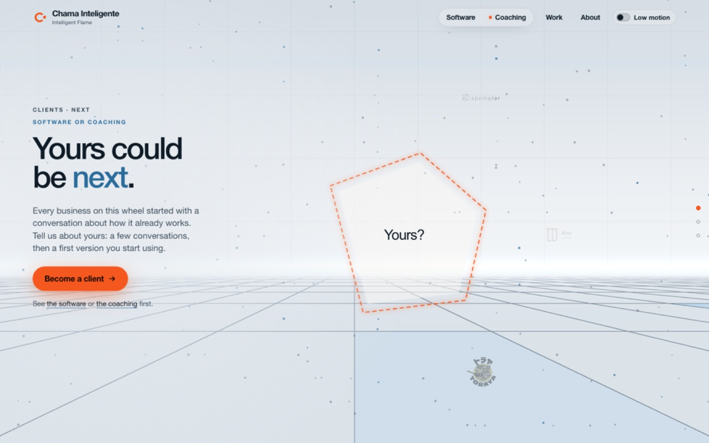
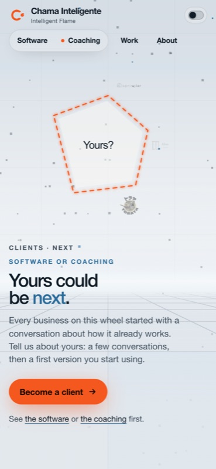
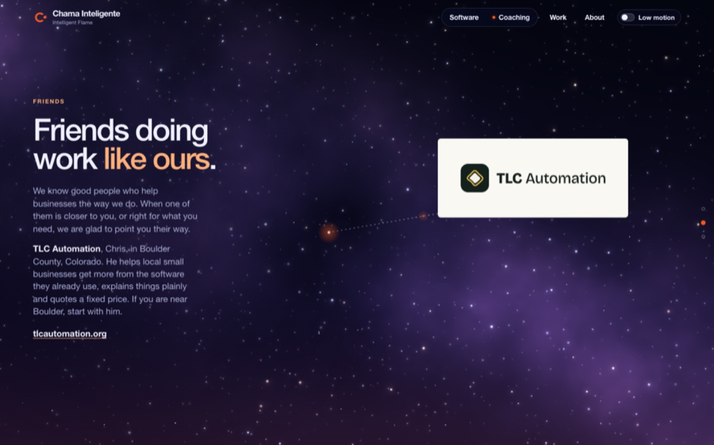
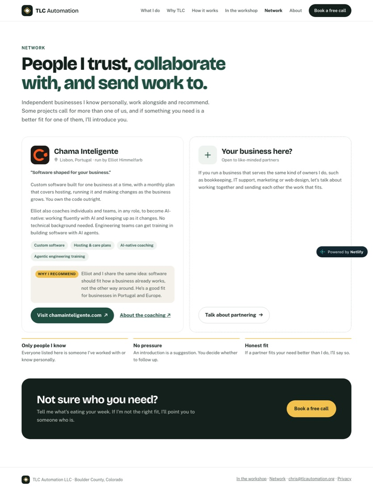

The client call to action is live. The Friends section has three designs on preview branches, each with a partner call to action. Pick one and I finish it.
✓ Client call to action live✓ Anchor outline bug fixed in production✓ 3 designs on draft PRs✓ Tests pass on all four branchesWaiting: your pick
Live now: "Yours could be next"

The wheel turns on past Springlar to an open dashed place. Become a client opens the flame with "I'd like to talk about becoming a client." PR #140

Phone
Why Friends felt thin

Ours today: one logo floating in space, two sentences, no reason to trust him, no way to join.

Chris's page: what we do, why he recommends us, an open "Your business here?" card, three rules, a closing ask.
Design A
Introductions: two cards on the night
Everything on one screenMirrors Chris's pageBusiest of the three
It gives Chris the most room and a real endorsement, and it keeps working when we have five friends instead of one. A is the safe choice if you want it all on one screen. B is the prettiest but hides Chris behind a scroll step.
Previews sit behind Vercel sign-in, so open them in a browser where you are signed in to Vercel.